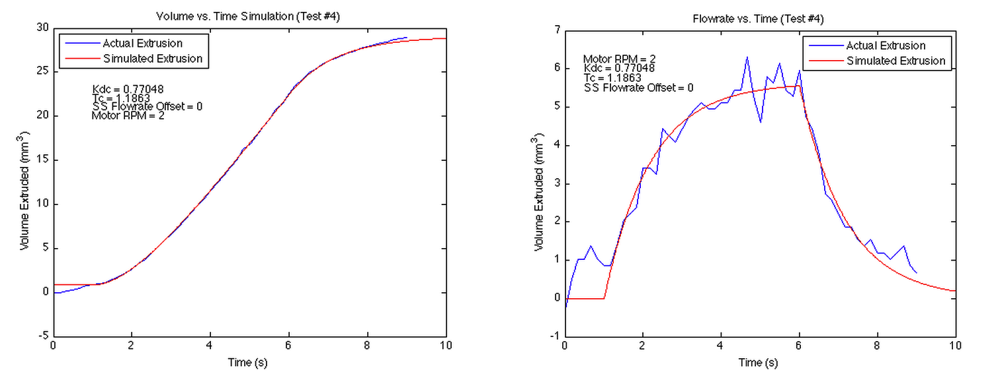
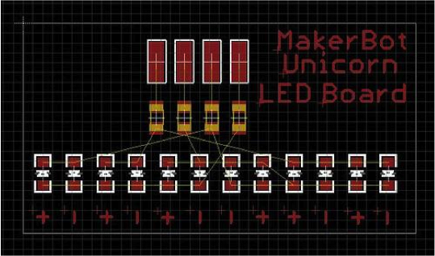
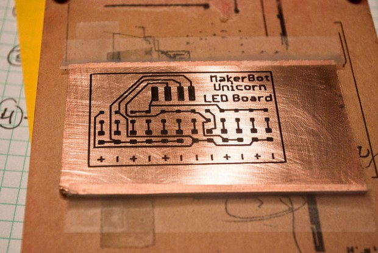

← Will Makes Things.
Makerbot
Makerbot Industries makes and sells low-cost 3D printers. I was their first intern (back in 2009) and worked with for them for three summers (from 2009 to 2011). It was a great experience to see how a company grows from three people to well over a hundred now.
In reverse chronological order here are just a few of the projects I've worked with them on over the past few years...
CNC Cupcake Frosting, 2012
In Spring 2012 Makerbot Industries featured me in an episode of Makerbot TV (a web-series featuring makerbot operators doing cool things). The Tufts Robotics Club joined forces with the Tufts Society of Women Engineers to frost some cupcakes with Makerbot Cupcake CNC's modified with Frosting Extruders ("Frostruders"). Check it out...
Dual-Extrusion, 2011
In Summer 2011, I worked on developing dual-extrusion capabilities for the next-generation Makerbot (the Makerbot Replicator). Dual-extruders enable makerbots to fabricate objects in from multiple materials (or material colors) in a single print. I developed software scripts to effectively create G-code to enable printing with both extruders at once.

I also explored the characteristics of molten thermoplastic flow. I created a mathematical (dynamic) model of Makerbot's thermoplastic extruder. Experimental testing validated the theoretical model and was used to characterize the responsiveness of the thermoplastic extruder (how quickly flow could be stopped and started).
In Spring 2012, I wrote a term paper on a detailed analysis of the flow characteristics of thermoplastic extruders. I also prepared a less thorough (but more engaging) presentation on the subject.
Unicorn Pen Plotter, 2010
I spent the summer of 2010 designing, testing, programming, and launching a new product for Makerbot Industries. The Unicorn pen plotter is a toolhead that expands the capabilities of the Makerbot 3D printer back into the 2D realm.

Aside from just making really cool art and post-it note sketches...
it can also draw resist on copper clad board which can then be etched to create funcitonal circuit boards.
 